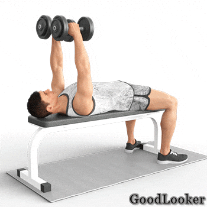

Во второй день вы прокачаете спину, ноги, плечи, грудь и даже выполните изоляцию на бицепс и икры. Не забудьте про упражнения для пресса, которыми рекомендуется завершать тренировку.
Работающие мышцы: широчайшие, ромбовидные и большие круглые мышцы спины, трапеции, мышцы плеч и предплечий.
Как выполнять:
Это отличное упражнение для спины и развития верха тела. Повисните на турнике на прямых руках, напрягите кор. Делайте подтягивание, сгибая руки в локтях и пытаясь коснуться турника грудью. Опускайтесь вниз, полностью выпрямляя руки, чтобы хорошо растянуть широчайшие.
Во время подтягиваний не раскачивайтесь, пытаясь помочь себе ногами. Но если вы новичок, то рывковые движения помогут вам научиться подтягиваться. В таком случае необходимо задерживаться подольше в верхней точке, что поможет мышцам адаптироваться к новой нагрузке.
Если нет турника, то выполняйте тягу гантелей в наклоне, во время которой тоже работают ключевые мышцы спины.
Работающие мышцы: широчайшие, ромбовидные и большие круглые мышцы спины, трапеции, задние дельты.
Как выполнять:
Наклонитесь вперед с прямой спиной, согнув ноги в коленях. Руки с гантелями опущены вниз параллельно ногам. Держите гантели горизонтально. Не наклоняйтесь слишком сильно, грудь должна быть направлена вперед. Тяните гантели к корпусу, сгибая руки в локтях. Следите, чтобы локти сгибались под прямым углом. В верхней точке сводите лопатки, чтобы работал весь спектр мышц спины.
Во время этого упражнения важно не сгибаться в пояснице, иначе можно травмироваться. Сохраняйте легкий прогиб в спине, который поможет предотвратить травму. В силовой тренировка фулбоди особое внимание принадлежит тренировке спины, ведь именно здесь сосредоточен самый большой комплекс мышц, который влияет на внешний вид всего тела.
Работающие мышцы: квадрицепсы бедер, средние и большие ягодичные, приводящие мышцы бедер, косые мышцы живота.
Как выполнять:
Возьмите в руки снаряды и сделайте широкий шаг вперед, опускаясь в выпад. Вернитесь обратно и повторите другой ногой. При выполнении выпадов вперед держите гантели на вытянутых вниз руках. Постарайтесь не раскачивать их, иначе это помешает вам держать равновесие. Спину не сгибайте, смотрите прямо вперед.
Не сгибайте колени под острым углом, иначе не только нарушится техника, но и увеличится нагрузка на коленные суставы.
Работающие мышцы: большие грудные мышцы, дельты (передние и средние пучки), бицепсы, трицепсы, предплечья.
Как выполнять:
Возьмите в руки снаряды и лягте на скамью. Поднимите прямые руки с гантелями вверх, ладони повернуты друг к другу. Немного согните руки в локтях и не разгибайте их до конца подхода. Начинайте разводить руки с гантелями в стороны, следите, чтобы локти были направлены строго вниз. Опускайте руки до ощущения «натянутости» в грудных, затем поднимайте их вверх почти до соприкосновения гантелей.
В силовой тренировке для мужчин дома не обойтись без проработки грудных. Это упражнение можно выполнять не только на прямой, но и на наклонной лавке. Причем, если лавка наклонена вниз, вы тренируете нижнюю часть грудных, а если вверх – то верхнюю. На прямой лавке лучше всего задействуется средняя часть больших грудных мышц.

Если у вас дома нет скамьи или удобных табуреток, то можно выполнять это упражнение на полу, но в этом случае амплитуда выполнения упражнения будет меньше.
Работающие мышцы: передние и средние дельты, трицепсы, ромбовидные мышцы спины, трапеции.
Как выполнять:
Встаньте прямо, гантели находятся в выпрямленных руках. Если есть возможность, становитесь перед зеркалом, чтобы контролировать технику. Поднимите прямые руки с гантелями вверх. Сгибайте руки в локтях, опуская гантели к плечам, и выжимайте их обратно вверх. В нижней точке гантели должны оказаться на уровне ушей. При жиме разводите локти в стороны. Оси обеих гантелей должны находиться в одной плоскости, как бы продолжая друг друга.
При выполнении упражнения, представьте, что вы выжимаете штангу, как при армейском жиме. Руки должны двигаться в такой же амплитуде, а гантели – оставаться неподвижными, не раскачиваться. Выполняйте это эффективное силовое упражнение в домашних условиях, чтобы сделать плечи широкими и мощными.

Работающие мышцы: трицепсы, предплечья.
Как выполнять:
Возьмите гантель в правую руку, левой обопритесь о скамью. Поставьте колено левой ноги на скамью, правая стоит прямо. Не сгибайтесь в пояснице, зафиксируйте тело в неподвижном положении. В начальной позиции правая рука с гантелью согнута в локте под прямым углом: предплечье перпендикулярно корпусу, плечо прилегает к телу. Разгибайте руку с гантелью в локте, отводя ее максимально назад. Повторите для другой стороны.
Упражнение изолированно прорабатывает трицепсы, делая руки мощными. Если берете большой вес, делайте упражнение медленно, без резких движений, чтобы не травмировать локтевые суставы.
Можно выполнять это упражнение без скамьи:
Работающие мышцы: икроножные.
Как выполнять:
Возьмите снаряды в каждую руку и встаньте лицом к возвышению (степ-платформа, диски от штанги). Поставьте носки на возвышенность, пятки остаются на полу. Гантели спокойно находятся в прямых, опущенных руках. Поднимайтесь на носки, отталкиваясь пятками от пола, и возвращайтесь назад.
В силовую тренировку для мужчин дома входят упражнения для прокачки мышц всего тела. Это упражнение поможет развить икры, чтобы ноги выглядели гармонично. Помимо силового эффекта, подъем на носочки помогает растянуть мышцы, что полезно для их эластичности.